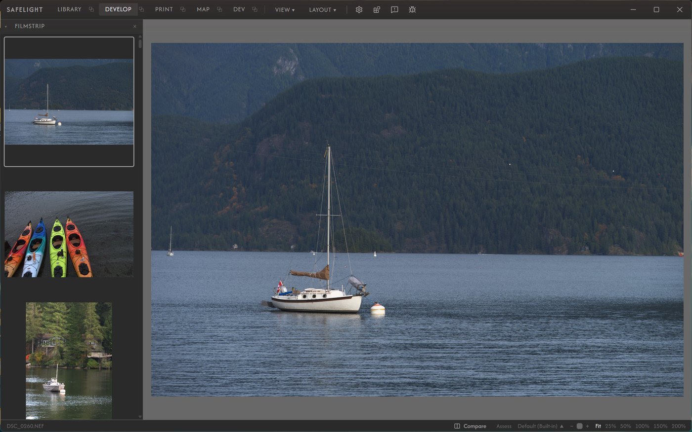
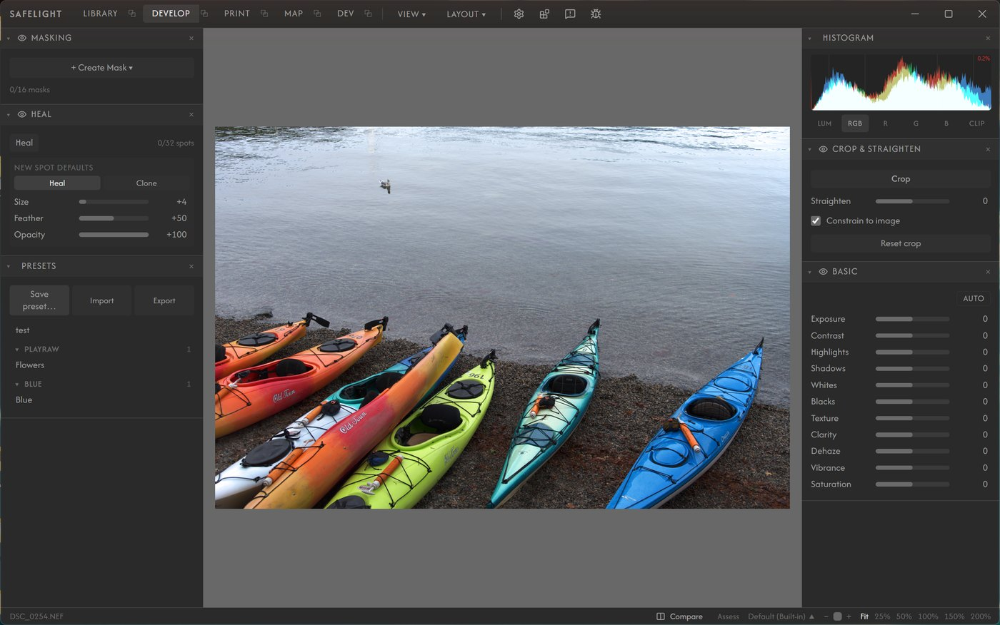
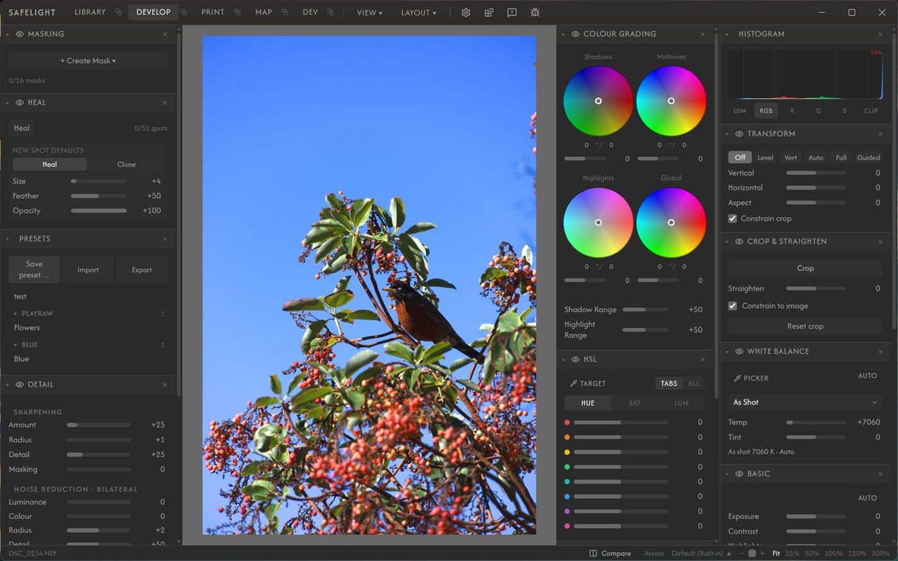

Ready the day you install it.
Safelight opens with a full set of familiar editing tools already in place. Pick a starter kit for the way you shoot if you like, open a folder of photos, and start.
How do you shoot?
Pick a starter kit, or skip it and keep the standard tools.
Film looks
Film stock simulation, alternative tone rendering, and your camera's own JPEG look.
3 extensions
Detail and repair
Noise, local contrast, lens faults and small repairs.
6 extensions
Organising
Collections, keywords, metadata and duplicates for large libraries.
6 extensions
Events and volume
Faster culling and editing across many photos, and galleries for clients.
5 extensions
Finish
Set it up the way you work.
Keep the tools you reach for where your hands expect them. Turn off the ones you never touch and they're gone, not buried in a menu.



Three setups, one Safelight. The fourth is yours.
When something better comes along, add it.
Say you find a film look you like more. Install it next to the one you have, try it on your next photo, and keep going. Your layout, your shortcuts and your finished edits stay exactly as they were. You learn one tool, not a new program.
The new tool joins the ones you already use.